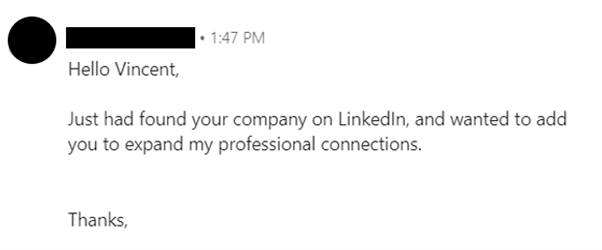
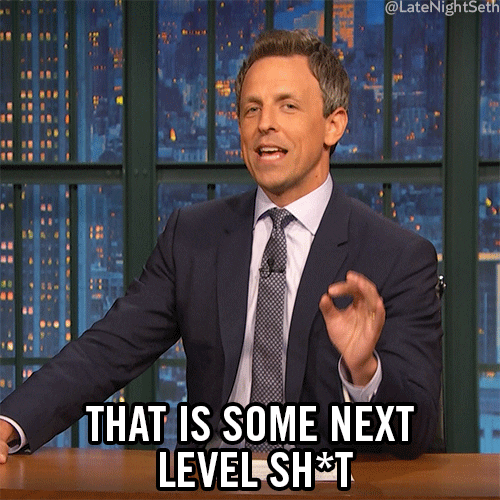
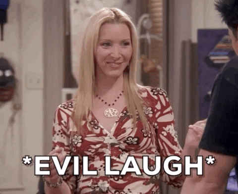

Today I want to cover a big topic – the messages we use in our connection requests, or rather the messages we SHOULD use.
The connection message is the most important part of your LinkedIn outreach strategy as it’s the very beginning of your campaign. If you get it wrong, your campaign will have mediocre results.
We have all received this type of message:
And if you can relate, I’m pretty sure you’ve passed this request without accepting, looking at the sender’s profile or paying attention to any follow up they might have sent.
This type of message is hated for several reasons. It has no personalization whatsoever (almost as if it was sent randomly :O), it brings no value or reason to accept, it’s not particularly inviting, and frankly it feels like spam!
So, how to craft messages that will get you new connections?
Don’t worry, we’ve got your back! Today I’ll give you 10 templates for 10 different types of situations.
Really exciting! But wait – these templates have acceptance rates of 58% to 82%!!
Here it comes - Top 10 templates to boost your LinkedIn connection request acceptance.
Table of Contents
1. Connection message after tailored profile search2. Connection message after engagement on your post
3. Common ground message
4. Content creator connection message
5. Connection message after engagement someone’s post
6. LinkedIn group connection message
7. Facebook group connection message
8. Using the same tech
9. Using competitor
10. Talent sourcing
1. Connection message after tailored profile search
Let’s start with the most straight forward approach we can use on LinkedIn – the search.
Here we’ll search using LinkedIn’s various filters to extract profiles that match our target audience.
Once you have this pool ready to be contacted, you can send a personalized connection request.
Here’s a template I like to use:
‘Hi {first_name},
The work {company_name} is doing in the SaaS space is so interesting, the company’s blog is a
great
resource too.
I’m posting some valuable content pretty regularly, thought it might be interesting to
connect.’
It’s simple, explains the value of the connection and it got a nice 65% acceptance rate.
2. Connection message after engagement on your post
When people engage with you posts (like, comment, share, etc), it demonstrates two things.
They are active LinkedIn users – so if you reach out to them, you’re more likely to have a response.
They are interested in your content – so they are likely to be interested in what service or product you’re providing, and more likely to become clients.
Posting regularly on LinkedIn is the best way to build a following audience, and credibility in your space. I’d recommend posting once or twice per week – more quality than quantity.
A template I used to reach the user who engaged with my content:
‘Hello {first_name},
I saw you liked my post about – ‘{name of the post}’. Thanks for engaging!
Let’s connect so we can keep the content flowing ’
This template consistently gets over 80% acceptance.
3. Message based on common grounds
Having something in common with the users you want to connect with is extremely powerful.
LinkedIn allows you to find similarities between your profile and others, you can even base your search on these common grounds, using a set of filters.
Whether it’s connections in common, similar experiences, schools or industries, you can base your approach on this to boost your acceptance rate.
The template below shows you how:
‘Hi {first_name},
I see we both work in SaaS, we even have a few connections in common.
It’s always great to meet new people in the space, want to connect?’
I got 58% acceptance rate with this template, it amazing to expand your connections rapidly with a particular focus.
4. Content creator connection message
LinkedIn is the one of the best platforms for professional content, and 94% of marketers use LinkedIn to publish content, it’s because the audience is incredibly large.
You can search for quality content about your space by using hashtags and keywords into the LinkedIn search engine and filter by posts.
Once you found good posts, you can send a connection request to the content creator.
Here’s a template I personally use:
‘Hey {first_name},
Excellent post about Fintech development in Europe! I follow the space closely and love to
learn,
it’d
be great to connect.’
This gets accepted around 80% of the time – it can be a bit time consuming but highly rewarding as you get great quality connections, and it’s the perfect basis for our next tip.
5. Connection message after engagement someone’s post
LinkedIn users who are in your network or who you’re following are a great resource for you.
Their post can be extremely useful, first for yourself as educational content, but it can also be where you source leads and new contacts.Let me explain, if you come across a great post about your space, that’s got high engagement – you can tap into this engagement to reach the users who showed interest.
Here a great template to use for that:
‘Hi {first_name},
I saw you liked {user_name}’s post on LinkedIn lead generation too, pretty good insight on how
to
setup
an outreach strategy.
Seems like we share a passion for growth hacks, let’s connect,
Vincent’
This message got around 70% rate for me – and you can duplicate this for several posts!
6. LinkedIn group connection message
LinkedIn groups are a great place to find like-minded people.
It’s a pretty easy way of focusing on user who are interested in a topic. From your side, you can just join groups that are related to your space, your product or service, and use the group as a platform to connect with other people.
The template I use quite frequently is:
‘Hello {first_name},
I saw you’re a member of {group_name} too, I guess we share the same interest for {topic}!
Let’s connect here.’
You can get a decent acceptance rate with this strategy, personally I average 64%.
7. Facebook group connection message
Keeping our focus on groups, a great way to connect is to retarget Facebook group members on LinkedIn to make your approach feel more professional just by switching platforms.
Another great way to target like-minded individuals!
The template I’d recommend using is:
‘Hey {first_name},
Saw you’re also a member of {group_name} on Facebook. I guess we share a passion for SaaS!
It’d be great to connect and access content here too.’
Results are a little higher here – around 75% in my case!
8. Connection request based on Technology
Technology can be an opportunity for you to connect with prospects.
You can connect with people who use the same technology as you. It will allow you to build bridges between the prospects and you in order to connect with them. You need to focus on tech that would be used by someone who could be interested by your offering as well.
There’s no point targeting all Salesforce users for instance, instead you can focus on tech that’s complementary to your product or services.
For example, if you’re selling an app that connects with Stripe, you can target Stripe users to connect.
Here’s a template that I use:
‘Hi {first_name},
I believe we’re both users of {technology}, great tool!
Let’s connect and we can perhaps share tips and tricks.’
This strategy got me a 79% acceptance rate!
9. Connection request based on the use of competitors’ technology
This approach is similar to our previous section, but here instead of targeting LinkedIn users based on the use of the same technology, you’ll target them based on the use of competitors.
It will make you connect with potential users, with a guaranteed need and who might not be aware of your existence (yet 😉).
For example, if you’ve built a live chat tool, you can target Intercom’s users, and connect. Having these connections can prove extremely valuable as they will either be interested right away, or they will be in your connections seeing your great content – which could encourage them to switch to you!
A good template for this could be:
‘Hi {first_name},
I see that you’re using {technology_name}. I work in the {technology} space myself and I’d love
to
talk
about what drew you towards them.
Let’s connect!’
Or
‘Hi {first_name},
I see that you’re using {technology_name}. I work in the {technology} space myself and I’d love
to
know
what your feedback is.
Let’s connect!’
You can access 1000s of tech users this way and get them to connect with you!
10. Talent sourcing
Our last section will be about recruitment (LinkedIn is not only for sales and growth hacking 😉). You can use this template to reach awesome candidates for your business or for your clients.
You’ll need to personalize this with an achievement, and you’ll be able to find one in one of their posts, or on their profile.
Here you go:
‘Hello {first_name},
I’m a fan of the work you’re doing at {company_name}!
I saw you {achievement}.
We have an opening at Reachly and are looking for someone with that type of skills. Want to
connect
to
learn more?’
Now you have all the tools you to start connecting on LinkedIn!
Oh wait, you might not have the time to do all that, no worries we've got you
covered.
😉